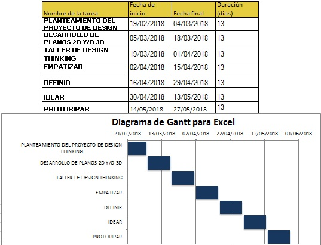

Prototipado
...
DESCOMPOSICION FUNCIONAL DE LA SOLUCION
El Carrito de Compras
Esta es la herramienta de trabajo de muchas empresas dedicadas a la venta de productos, esta herramienta se ve involucrada en un problema con su mal uso por parte de algunos usuarios.
Documento - El Carrito de ComprasLa Rueda del Carrito
Brindara movilidad al carrito de compras y acompañado de unos ejes giratorios lo hara mas facil y como de usar.
 Documento - La Rueda del Carrito
Documento - La Rueda del Carrito
Sistema de Freno para Carrito
Este sistema de freno para carritos de supermercados se encontrara ubicado en una de las ruedas y sera activado luego de sobrepasar o superar una cierta distancia segun su configuracion.
Documento - Sistema de Freno para CarritoBastidor del Eje
Esta parte del carrito sera el que mantenga sujeto las ruedas y tambien brinde la facilidad de hacer giros o cualquier otra maniobra, permitiendo asi que el usuario pueda realizar sus compras comodamente.
Documento - Bastidor del EjeDispositivo GPS
Este dispositivo GPS se percatara cuando el carro de compras salga fuera del limite, activando asi los siguientes componentes encargados del frenado y esta sera alimentada con 5V
Documento - Dispositivo GPSCubierta del Freno
La cubierta del freno mantendra seguro el dispositivo de freno y tambien a su vez el dispositivo GPS; esta parte protegera cada componente del carro ante cualquier focejeo.
Documento - Cubierta del FrenoBloqueo de Rueda
Este pequeño dispositivo nos servira para bloquear la rueda luego de que el GPS envio la señal al sobrepasar el limite.
Documento - Bloqueo de RuedaTuerca de Eje
Esta tuerca de 16 pulgadas mantendra sujeto la rueda al bastidor y tambien el dispositivo de frenado de la rueda misma.
Documento - Tuerca de EjeFreno de Pastillas
Aquí podemos apreciar la composición del sistema de frenado, el cual se activa luego de que el GPS recopilo la información al sobrepasar la distancia asignada, los frenos activan unas pastillas que realizan presión sobre la rueda e impiden que esta continue girando.
Documento - Freno de PastillasCircuito GPS
Aquí notamos de manera detallada lo que sería el circuito dentro del GPS, el cual hace posible el correcto funcionamiento del freno ya que así podremos tener un mejor control del carritos evitando que salga de zonas designadas.
Documento - Circuito GPSSeñales y Local
Al señalizar o avisar a los compradores que el carrito cuenta con un freno automático que luego de sobrepasar el límite de distancia asignada se activa, ofrecemos una mejor comunicación entre el usuario a la empresa donde realiza sus compras y de este modo evitamos eventos inesperados o desagradables.
 Documento - Señales y Local
Documento - Señales y Local
DESCOMPOSICION FUNCIONAL DE LA SOLUCION
Para el primer paso hemos realizado entrevistas en los lugares donde se presentan estos problemas.
*Nuestro entrevistado fue el encargado de organizar los carritos de compras, puesto que el es el testigo mas claro; nos comento sobre como el mal uso de carritos causaba problemas no solo a la empresa sino a tambien a los transeuntes.
Para el segundo paso el grupo brindo todas la ideas que podrian dar solucion a este problema y se debatieron para mejorarlas.
*Si bien la implementacion de señales que indiquen o adviertan el uso de los carritos no seria muy bien captada por los compradores, una de las mjores soluciones era implementar un sistema de frenos en un grupo de carritos, para ver la reaccion de los usuarios y asi realizar mas mejoras.
Aqui brindaremos los costos de las partes mas importantes de nuestra propuesta; para ello detallaremos el precio del carrito, el dispositivo gps y los sistemas de frenados.
Carrito de Supermercado ………………… S/. 139.00
Dispositivo GPS ………………………………….. S/. 38.00
Pastillas de Freno ………………………………. S/. 35.00
DIAGRAMA DE GANTT
El Carrito de Compras
Esta es la herramienta de trabajo de muchas empresas dedicadas a la venta de productos, esta herramienta se ve involucrada en un problema con su mal uso por parte de algunos usuarios.
Documento - Fabricación DigitalINVOLUCRADOS EN EL DESARROLLO DE LA PROPUESTA
1.bastidor que une al eje:
Permitira mantener sujeto el dispositivo de frenado al carrito de compras, brindando asi mas seguridad.
2.giratorio superior
Permitira que el carritos pueda reallizar sus funciones con total normalidad brindandole al cliente mas comodiad al momento de realizar compras.
3.eje
El eje basicamente mantiene unida la rueda del sistema de freno con el bastidor.
4.nucleo
Protege al eje de posibles golpes y mantiene firme la rueda.
5. pieza cilindrica de diametro algo inferior que el de las ruedas
Es la rueda la cual se encuntra hecho de un material sintetico y siendo asi suave ante posibles grietas o superficies malas por las que es carrtio tenga que pasar.
6. guardapolvos quita hilos
Mantine la posicion de la pieza cilindrica para que asi la tuerca de fijacion pueda cumplir su funcion sin dañar otros componentes al momento de asegurar.
7. mecanismos que está formada la rueda
Permitira que el carritos pueda reallizar sus funciones con total normalidad brindandole al cliente mas comodiad al momento de realizar compras.
9. tuerca o fijación amovible similar
Mantiene fija el guardapolvos evitando asi que se desprenda o se deslice.
11. acanaladura
Una superficie que que se encuentra cubierta por la pieza cilíndrica y a la vez mantiene estable esta, evitando que la pieza cilíndrica se deforme.